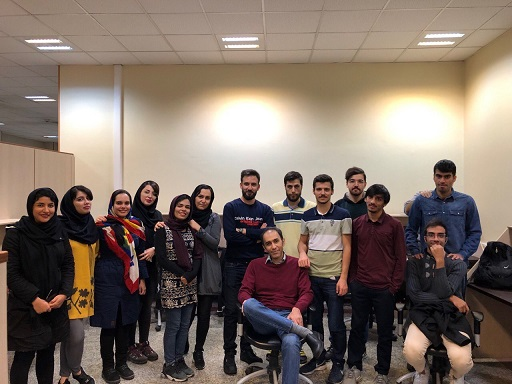

Stochastic Processes | Fall 2020 | Instructor: Dr. Ali Olfat | elearn page
Stochastic Processes | Fall 2019 | Instructor: Dr. Amir Masoud Rabiei | cecm page
Detection and Estimation Theory | Spring 2019 | Instructor: Dr. Ali Olfat | cecm page
| Selected Problems and Solutions |
Stochastic Processes | Fall 2018 | Instructor: Dr. Ali Olfat | cecm page
Detection and Estimation Theory | Spring 2018 | Instructor: Dr. Ali Olfat | cecm page
Stochastic Processes | Fall 2017 | Instructor: Dr. Amir Masoud Rabiei | cecm page
Adaptive Filter Theory | Fall 2017 | Instructor: Dr. Ali Olfat | cecm page

amongst former graduate students, before the pandemic...